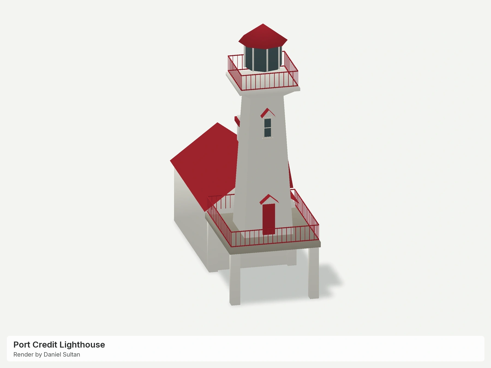
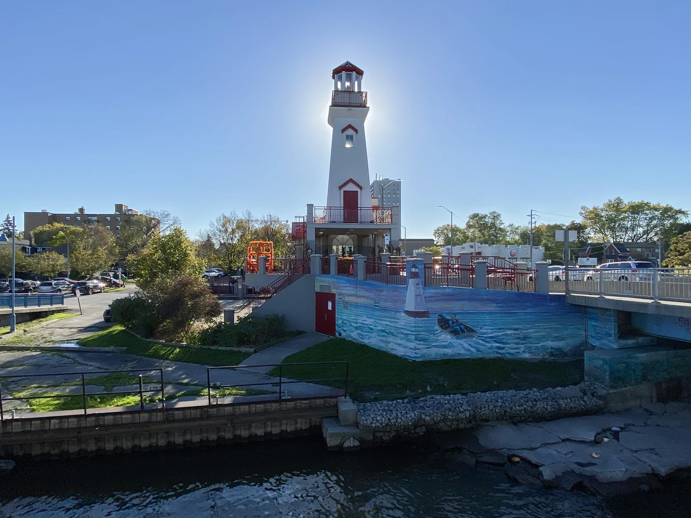

Port Credit Lighthouse
105 Lakeshore Road West See the site ↓

Building team
- Builder, 1991 lighthouse
- Credit Valley Lions Club
- Project stage
- Existing
In real life

105 Lakeshore Road West See the site ↓

